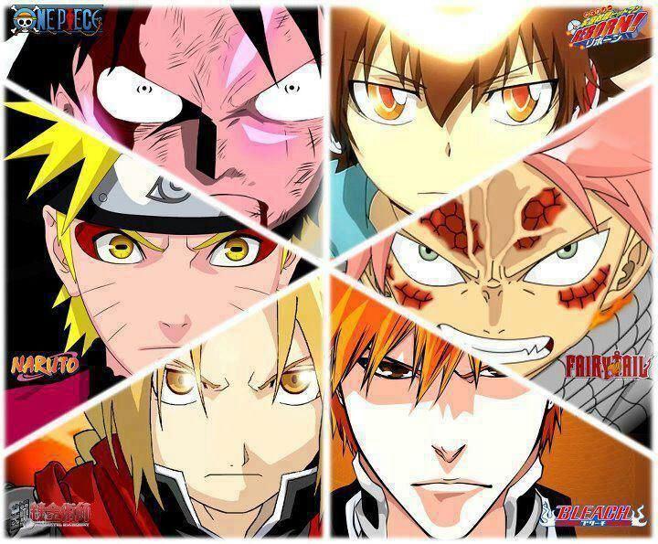

Shōnen
dirigido a chicos adolescentes.

Esto es Shōnen
Shōnen es la categoría del manga y anime dirigida especialmente a varones jóvenes. Los anime y manga shōnen típicamente se caracterizan por ser series con grandes dosis de acción, a menudo situaciones humorísticas con protagonistas masculinos. El compañerismo entre adolescentes o adultos de un equipo de combate, también suele subrayarse en un shōnen. También suele haber personajes atractivos femeninos (como en el bishōjo o fanservice), cabe destacar que no siempre.